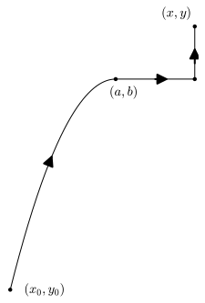

Section13.4Path-Independent Vector Fields and the Fundamental Theorem of Calculus for Line Integrals
Motivating Questions
What characteristic of a vector field \(\vF\) will make \(\int_C\vF\cdot d\vr\) have the same value for every oriented curve from a point \(P\) to a point \(Q\text{?}\)
What special properties do gradient vector fields have?
Given a gradient vector field \(\vF\text{,}\) how can we efficiently find a potential function \(f\) so that \(\vF = \grad f\text{?}\)
In Activity13.3.4, Example13.3.9, and Activity13.3.5, we encountered situations where \(C_1\) and \(C_2\) are different oriented curves from a point \(P\) to a point \(Q\) and \(\int_{C_1}\vF\cdot d\vr = \int_{C_2}\vF\cdot d\vr\text{.}\) In this section, we explore vector fields which have the property that for all points \(P\) and \(Q\text{,}\) if \(C_1\) and \(C_2\) are oriented paths from \(P\) to \(Q\text{,}\) then \(\int_{C_1}\vF\cdot d\vr = \int_{C_2}\vF\cdot d\vr\text{.}\)
Preview Activity13.4.1.
In Activity13.3.4, we considered the vector field \(\vF(x,y) = \langle y^2,2xy+3\rangle\) and two different oriented curves from \((-2,5)\) to \((3,30)\text{.}\) We found that the value of the line integral of \(\vF\) was the same along those two oriented curves.
(a)
Verify that \(\vF(x,y) = \langle y^2,2xy+3\rangle\) is a gradient vector field by showing that \(\vF = \nabla f\) for the function \(f(x,y) = xy^2 + 3y\text{.}\)
Solution.
Since \(\frac{\partial f}{\partial x}=y^2\) and \(\frac{\partial f}{\partial y}=2xy+3\text{,}\)\(\vF=\nabla f\text{.}\)
(b)
Calculate the change in the output of the scalar function \(f\) over the curves \(C_1\) and \(C_2\text{.}\) In other words, what is the difference in the output of \(f\) at the start of the curve and the end of the curve? How does this value compare to the value of the line integral \(\int_{C_1}\vF\cdot d\vr\) you found in Activity13.3.4?
Solution.
Algebraically, \(f(3,30)-f(-2,5)=3\cdot 30^2+3\cdot 30-(-2\cdot 5^2+3\cdot 5) = 2825\text{.}\) The line integral is also \(2825\text{.}\)
(c)
Let \(C_3\) be the line segment from \((1,1)\) to \((3,4)\text{.}\) Calculate \(\int_{C_3}\vF\cdot d\vr\) as well as \(f(3,4)-f(1,1)\text{.}\) Write a sentence that compares your answer to this part to your result for part13.4.1.b.
Solution.
The line segment \(C_3\) is given by \(\vr(t)=\langle 1+2t,1+3t\rangle\) as \(0\leq t \leq 1\text{.}\) Thus,
Note here that \(f(3,4)-f(1,1)=60-4=56\) which is the same as the result of the line integral.
Subsection13.4.1Path-Independent Vector Fields
Hopefully Preview Activity13.4.1 has prompted you to wonder about the phenomenon of the value of a line integral depending only on the initial and terminal points of the oriented path (rather than the oriented path itself) and how a potential function comes into play. We say that a vector field \(\vF\) defined on a region \(D\) is path-independent if \(\int_{C_1}\vF\cdot d\vr = \int_{C_2}\vF\cdot d\vr\) whenever \(C_1\) and \(C_2\) are oriented paths in \(D\) such that both curves start at point \(P\) and end at point \(Q\text{.}\)
In Activity13.3.4 and Example13.3.9, we encountered situations where we had evidence that a vector field was path-independent. However, since the definition of path-independence requires that the value of the line integral be the same for every possible path from one point to the other (regardless of choice for the initial and final points), it doesnt appear that verifying a vector field is path-independent is an easy task.
Fortunately, one familiar class of vector fields can be shown to be path-independent. Let \(f\colon \R^3\to \R\) be a function for which \(\nabla f\) is continuous on a region \(D\text{.}\) Suppose that \(P\) and \(Q\) are points in \(D\) and let \(C\) be a smooth oriented path from \(P\) to \(Q\) that is also contained in our region \(D\text{.}\) We consider \(\int_C\nabla f \cdot d\vr\) by fixing an arbitrary parametrization \(\vr(t)\) of \(C\text{,}\)\(a\leq t \leq b\text{.}\) Since we can write \(x\text{,}\)\(y\text{,}\) and \(z\) in terms of \(t\text{,}\) along \(C\text{,}\) the gradient of \(f\) is given by
In other words, gradient vector fields are path-independent vector fields, and we can evaluate line integrals of gradient vector fields by using a potential function.
This result is so important that it is frequently called the Fundamental Theorem of Calculus for Line Integrals, because of its similarity to the Fundamental Theorem of Calculus2, which can be written as
Theorem13.4.1.Fundamental Theorem of Calculus for Line Integrals.
Let \(f\) be a function for which \(\nabla f\) is continuous on a region \(D\text{.}\) If \(P\) and \(Q\) are points in \(D\) and \(C\) is a piecewise smooth oriented path from \(P\) to \(Q\) in \(D\text{,}\) then
Suppose we need to calculate the line integral of \(\vF= \langle 2xy-2, x^2+3e^y \rangle\) over the path from \((2,0)\) to \((4,-2)\) along the curve given by \((x-2)^2=-y/2\text{.}\) If we use Theorem13.3.6 to solve this, we would need to parameterize the curve, take a derivative of the parameterization, substitute into the line integral formula, and finally integrate the result. Fortunately, Theorem13.4.1 allows us to be more efficient in how we approach this.
In order to use Theorem13.4.1, we first need to verify that there exists a potential function \(f(x,y)\) such that \(\nabla f = \langle 2xy-2, x^2+3e^y \rangle\text{.}\) We will soon learn techniques in Activity13.4.3 for finding a protential function, but for now, you should be able to verify for yourself that \(f\) will be of the form \(f(x,y) = x^2y-2x-3e^y+k\text{,}\) where \(k\) is a constant. Note that \(f(4,-2)- f(2,0)= (-32-8+3e^{-2}+k)-(0-4-3+k)= 3e^{-2}-41\text{,}\) regardless of what value we choose for \(k\text{.}\) By Theorem13.4.1,
If we changed the path in our line integral to be any other path between \((2,0)\) and \((4,-2)\text{,}\) then the result would still be \(3e^{-2}-41\text{.}\)
(b)
If we changed the path in our line integral to be some path \(C_1\) from \((1,-1)\) to \((-1,4)\) but did not change the vector field being used, then we would only need to evaluate \(f(-1,4)- f(1,-1)\text{.}\) So for our new path \(C_1\text{,}\)
Sometimes, we know that the vector field we need to compute a line integral in is the gradient vector field of a given function, in which case evaluation of the line integral is very efficient. Before investigating how to find a potential function, we have an activity to practice applying Theorem13.4.1 when we are given the potential function.
Activity13.4.2.
Calculate each of the following line integrals.
(a)
\(\int_C \nabla f\cdot d\vr\) if \(f(x,y) = 3xy^2 - \sin(x) + e^y\) and \(C\) is the top half of the unit circle oriented from \((-1,0)\) to \((1,0)\text{.}\)
Solution.
Because \(f(-1,0)=-\sin(-1)+1\) and \(f(1,0)=sin(1)+1\text{,}\) then \(\int_C \nabla f\cdot d\vr=(\sin(1)+1)-(-\sin(-1)+1)=0\text{.}\)
(b)
\(\int_C \nabla g\cdot d\vr\) if \(g(x,y,z) = xz^2 - 5y^3\cos(z) + 6\) and \(C\) is the portion of the helix \(\vr(t) = \langle 5\cos(t),5\sin(t),3t\rangle\) from \((5,0,0)\) to \((0,5,9\pi/2)\text{.}\)
Solution.
Because \(g(5,0,0)=0-0+6\) and \(g(0,5,\frac{9\pi}{2})=0-0+6\text{,}\) then \(\int_C \nabla g\cdot d\vr=(6)-(6)=0\text{.}\)
(c)
\(\int_C \nabla h\cdot d\vr\) if \(h(x,y,z) = 3y^2e^{y^3} - 5x\sin(x^3z) + z^2\) and \(C\) is the curve consisting of the line segment from \((0,0,0)\) to \((1,1,1)\text{,}\) followed by the line segment from \((1,1,1)\) to \((-1,3,-2)\text{,}\) followed by the line segment from \((-1,3,-2)\) to \((0,0,10)\text{.}\)
Solution.
Because \(h(0,0,0)=0\) and \(h(0,0,10)=0-0+100\text{,}\) then \(\int_C \nabla h\cdot d\vr=(100)-(0)=100\text{.}\)
In Activity13.3.2, we used Clairauts Theorem to argue that a vector field in \(\R^2\) is not a gradient vector field when \(\partial F_1/\partial y\neq \partial F_2/\partial x\text{.}\) In Preview Activity13.4.1, you verified that a given vector field was the gradient of a particular function of two variables. Clairauts Theorem holds for functions of three variables. However, in that case there are six mixed partials to calculate, and thus it can be rather tedious. Activity13.4.3 suggest a process for determining if a vector field in \(\R^3\) is a gradient vector field as well as finding a potential function for the vector field.
Activity13.4.3.
Let \(\vG(x,y,z) = \langle 3e^{y^2}+z\sin(x),6xy e^{y^2} - z,3z^2-y-\cos(x)\rangle\) and \(\vH(x,y,z) = \langle 3x^2 y,x^3+2yz^3,xz+3y^2z^2\rangle\text{.}\)
(a)
If \(\vG\) and \(\vH\) are to be gradient vector fields, then there are functions \(g\) and \(h\) for which \(\vG = \nabla g\) and \(\vH=\nabla h\text{.}\) If such functions \(g\) and \(h\) exist, what would \(g_y\text{,}\)\(g_z\text{,}\)\(h_x\text{,}\)\(h_y\text{,}\) and \(h_z\) be?
Solution.
Each of the partial derivatives of \(g\) and \(h\) would have to be as follows: \(g_x=3e^{y^2}+z\sin(x)\text{,}\)\(g_y=,6xy e^{y^2} - z\text{,}\)\(g_z=3z^2-y-\cos(x)\text{,}\)\(h_x=x^2 y\text{,}\)\(h_y=x^3+2yz^3\text{,}\) and \(h_z=xz+3y^2z^2\text{.}\)
(b)
Let \(g_1(x,y,z)=3xe^{y^2}+xyz-z\sin(x)\text{.}\) Calculate \(\partial g_1/\partial x\text{.}\) Could \(g_1\) be a potential function for the vector field \(\vG\text{?}\)
Solution.
The partial of \(g_1\) with respect to \(x\) would be \(3e^{y^2}+yz-z\cos(x)\text{.}\) Since the partial of \(g_1\) with respect to \(x\) is not the same as the \(x\)-component of \(\vG\text{,}\)\(g_1\) cannot be a potential function for \(\vG\text{.}\)
(c)
Find a function \(g\) so that \(\partial g/\partial x = 3e^{y^2}+z\sin(x)\text{.}\) Find a function \(h\) so that \(\partial h/\partial x = 3x^2y\text{.}\)
Solution.
\(g(x,y,z)=3xe^{y^2}-z\cos(x)\) and \(h(x,y,z)= x^3y\) but can be different by any function of \(y\) and \(z\text{.}\)
(d)
When finding the most general anti-derivative for a function of one variable, we add a constant of integration (usually denoted by \(C\)) to capture the fact that any constant will become \(0\) through differentiation.
(i)
When taking the partial derivative with respect to \(x\) of a function of \(x\text{,}\)\(y\text{,}\) and \(z\text{,}\) what variables can appear in terms that become \(0\) in the partial derivative because they are treated as constants?
Solution.
Any terms that do not contain an \(x\)-variable will be treated as a constant, so \(y\) and \(z\) are allowed.
(ii)
What does this tell you should be added to \(g\) and \(h\) in the previous part to make them the most general possible functions with the desired partial derivatives with respect to \(x\text{?}\)
Solution.
The most general form of \(g\) and \(h\) are \(g(x,y,z)=3xe^{y^2}-z\cos(x)+ C_1(y,z)\) and \(h(x,y,z)= x^3y+C_2(y,z)\text{,}\) where \(C_1\) and \(C_2\) are functions.
(e)
Now calculate \(\partial g/\partial y\) and \(\partial h/\partial y\) based on your choices for part13.4.3.c. Write a few sentences to explain why this tells you that we must have
for some functions \(m_1\) and \(m_2\) depending only on \(z\text{.}\)
Solution.
We find that \(\frac{\partial g}{\partial y} = 6xye^{y^2}+\frac{\partial C_1}{\partial y}\) and \(\frac{\partial h}{\partial y}=x^3+\frac{\partial C_2}{\partial y}\text{.}\) This means that we need to add terms to \(g\) and \(h\) in \(y\) and \(z\) such that the partial with respect to \(y\) will correspond to the second component of \(\vG\) and \(\vH\text{.}\)
(f)
Calculate \(\frac{\partial g}{\partial z}\) and \(\frac{\partial h}{\partial z}\) for the functions in the part above. Notice that \(m_1\) and \(m_2\) are functions of \(z\) alone, so taking a partial derivative with respect to \(z\) is the same as taking an ordinary derivative, and thus you may use the notation \(m'_1(z)\) and \(m'_2(z)\text{.}\)
Explain why \(\vG\) is a gradient vector field but \(\vH\) is not a gradient vector field. Find a potential function for \(\vG\text{.}\)
Solution.
If \(g(x,y,z)=3xe^{y^2}-z\cos(x)-yz+z^3\text{,}\) then \(\nabla g = \vG\text{.}\) There is no \(m_2(z)\) that will have a partial with respect to \(z\) of \(xz\) since \(m_2(z)\) cannot have a dependence on \(x\text{.}\)
\(\int_C \vF\cdot d\vr\) if \(\vF(x,y) = \langle 2x,2y\rangle\) and \(C\) is the line segment from \((1,2)\) to \((-1,0)\text{.}\)
Hint.
Find \(f(x,y)\) such that \(\nabla f = \vF\text{.}\)
Solution.
We can choose \(f(x,y)=x^2+y^2\) and note that \(\nabla f = \vF\text{.}\) so by the Fundamental Theorem of Calculus for Line Integrals, \(\int_C \vF\cdot d\vr = f(1,2)-f(-1,0)=5-1=4\text{.}\)
(b)
\(\int_C \vG\cdot d\vr\) if \(\vG(x,y) = \langle 4x^3-12y\cos(xy),9y^2-12x\cos(xy)\rangle\) and \(C\) is the portion of the unit circle from \((0,-1)\) to \((0,1)\text{.}\)
Solution.
We can choose \(g(x,y)=x^4-12\sin(xy)+3y^3\) and note that \(\nabla g = \vG\text{.}\) so by the Fundamental Theorem of Calculus for Line Integrals, \(\int_C \vG\cdot d\vr = g(0,1)-g(0,-1)=3-(-3)=6\text{.}\)
(c)
\(\int_C \vH\cdot d\vr\) if \(\vH(x,y,z) = \langle H_1,H_2,H_3\rangle\) with
and \(C\) is the curve consisting of the line segment from \((1,1,1)\) to \((3,0,3)\text{,}\) followed by the line segment from \((3,0,3)\) to \((1,5,-1)\text{,}\) followed by the line segment from \((1,5,-1)\) to \((0,0,0)\text{.}\)
Solution.
We can choose \(h(x,y,z)=xe^{z^2}+x^2y^3z+\sin(x)+y^3\cos(x)+y^3z^2+e^{y^2}-z^4\) and note that \(\nabla h = \vH\text{.}\) By the Fundamental Theorem of Calculus for Line Integrals,
Subsection13.4.2Line Integrals Along Closed Curves
Recall that an oriented curve \(C\) is closed if the curve has the same initial and terminal point. A typical example of a closed curve would be a circle (with an orientation of which way to go around), but we could also consider something like the square with vertices \((1,1)\text{,}\)\((-1,1)\text{,}\)\((-1,-1)\text{,}\) and \((1,-1)\text{,}\) oriented clockwise (or counterclockwise). Recall that we sometimes use the symbol \(\oint\) for a line integral when the curve is closed and that if \(C=C_1+C_2\text{,}\) then \(\int_C\vF\cdot d\vr=\int_{C_1}\vF\cdot d\vr+ \int_{C_2}\vF\cdot d\vr\text{.}\)
Activity13.4.5.
Suppose that \(\vF\) is a continuous path-independent vector field (in \(\R^2\) or \(\R^3\)) on some region \(D\text{.}\)
(a)
Let \(P\) and \(Q\) be points in \(D\) and let \(C_1\) and \(C_2\) be oriented curves from \(P\) to \(Q\text{.}\) What can you say about \(\int_{C_1}\vF\cdot d\vr\) and \(\int_{C_2}\vF\cdot d\vr\text{?}\)
Solution.
Because \(\vF\) is a path-independent vector field and both \(C_1\) and \(C_2\) start at \(P\) and end at \(Q\text{,}\)\(\int_{C_1}\vF\cdot d\vr = \int_{C_2}\vF\cdot d\vr\text{.}\)
(b)
Let \(C = C_1 - C_2\text{.}\) Explain why \(C\) is a closed curve.
Solution.
The curve \(C\) is closed because the end of \(C_1\) is the start of \(-C_2\) and the end of \(-C_2\) is the start of \(C_1\text{,}\) thus \(C\) starts and ends at \(P\text{.}\)
(c)
Calculate \(\oint_C\vF\cdot d\vr\text{.}\)
Solution.
\(\oint_C\vF\cdot d\vr=\int_{C_1}\vF\cdot d\vr+ \int_{-C_2}\vF\cdot d\vr=\int_{C_1}\vF\cdot d\vr- \int_{C_2}\vF\cdot d\vr\) and by part13.4.5.a, this difference is zero.
(d)
Write a sentence that summarizes what we can conclude about line integrals of \(\vF\) at this point in the activity.
Solution.
The line integral along every closed curve in a path-independent vector field is \(0\text{.}\)
(e)
Now let us suppose that \(\vG\) is a continuous vector field on a region \(D\) for which \(\oint_C\vG\cdot d\vr = 0\) for all closed curves \(C\text{.}\) Pick two points \(P\) and \(Q\) in \(D\text{.}\) Let \(C_1\) and \(C_2\) be oriented curves from \(P\) to \(Q\text{.}\) What type of curve is \(C = C_1 - C_2\text{?}\)
Solution.
We have that \(C\) is a closed curve (from \(P\) to \(P\)) because \(C_1\) will go from \(P\) to \(Q\) and \(-C_2\) will go from \(Q\) back to \(P\text{.}\)
(f)
What is \(\oint_C\vG\cdot d\vr\text{?}\) Why?
Solution.
We see that \(\oint_C\vG\cdot d\vr=0\) because (as stated above) \(\vG\) is a continuous vector field on a region \(D\) for which \(\oint_C\vG\cdot d\vr = 0\) for all closed curves \(C\text{.}\)
(g)
What does that tell you about the relationship between \(\int_{C_1}\vG\cdot d\vr\) and \(\int_{C_2}\vG\cdot d\vr\text{?}\)
Explain why this shows that \(\vG\) is path-independent.
Solution.
The argument above relies only on the fact that the two paths have the same initial and terminal points.
We summarize the result of Activity13.4.5 with the theorem below. Although this theorem is not a terribly useful way to show that a vector field is path-independent, it can be a useful way to show that a vector field is not path-independent: If you can find a closed curve around which the circulation is not zero, then the vector field is not path independent.
Theorem13.4.3.
Let \(\vF\) be a continuous vector field on a region \(D\text{.}\) Suppose that \(C\) is a closed curve in \(D\text{.}\) The circulation of \(\vF\) along \(C\text{,}\) given by \(\oint_C\vF\cdot d\vr\text{,}\) is zero if and only if \(\vF\) is path-independent.
The following activity gives you a chance to reason about path-independence based purely on a graphical representation of a vector field.
Activity13.4.6.
Explain why neither of the vector fields in Figure13.4.4 is path-independent.
A vector field in which all vectors are horizontal. The vectors are \(0\) along the \(x\)-axis, point to the right for \(y>0\) and point to the left for \(y\lt 0\text{.}\) Vectors get longer as distance from the \(x\)-axis increases.
(a)\(\vF\)
A vector field in which vectors appear to circulate in a clockwise manner around the point \((3,0)\text{.}\) The magnitude of vectors increases with the distance from \((3,0)\text{.}\) The plot shows the portion of the vector field with \(0\leq x\leq 6\) and \(-3\leq y\leq 3\text{.}\)
(b)\(\vG\)
Figure13.4.4.Two vector fields that are not path-independent.
Solution.
In \(\vF\text{,}\) we consider the square with lower-left corner \((-1,-1)\) and upper-right corner \((1,1)\text{,}\) oriented clockwise, to be \(C\text{.}\) Notice that \(\oint_C\vF\cdot d\vr > 0\) because the line integrals along the horizontal edges of the square are both positive and the line integrals along the vertical sides are zero because \(\vF\) is orthogonal to those sides. Because the line integral along this closed curve is not \(0\text{,}\)\(\vF\) is not path-independent.
In \(\vG\text{,}\) consider the circle \(C\) of radius \(2\) centered at the point \((3,0)\text{.}\) It appears that \(\vG\) is tangent to \(C\text{,}\) but we can confidently say that \(\vG\cdot d\vr > 0\) along \(C\text{,}\) which makes \(\oint_C\vG\cdot d\vr\text{,}\) and thus \(\vG\) is not path-independent.
Subsection13.4.3What other vector fields are path-independent?
Recall that in single variable calculus, The Second Fundamental Theorem of Calculus3 tells us that given a constant \(c\) and a continuous function \(f\text{,}\) there is a unique function \(A(x)\) for which \(A(c) = 0\) and \(\frac{dA}{dx} (x) = f(x)\text{.}\) In particular, \(A(x) = \int_c^x f(t)\, dt\) is this function. We are about to investigate an analog of this result for path-independent vector fields, but first we require two additional definitions.
If \(D\) is a subset of \(\R^2\) or \(\R^3\text{,}\) we say that \(D\) is open provided that for every point in \(D\text{,}\) there is a disc (in \(\R^2\)) or ball (in \(\R^3\)) centered at that point such that every point of the disc/ball is contained in \(D\text{.}\) For example, the set of points \((x,y)\) in \(\R^2\) for which \(x^2+y^2 \lt 1\) is open, since we can always surround any point in this set by a tiny disc contained in the set (as illustrated by point \(P\) in Figure13.4.5). However, if we change the inequality to \(x^2+y^2\leq 1\text{,}\) then the set is not open, as any point on the circle \(x^2+y^2=1\) cannot be surrounded by a disc contained in the set; any disc surrounding a point on that circle will contain points outside the set, that is with \(x^2+y^2>1\) (as illustrated by the point \(Q\) in Figure13.4.5). We will also say that a region \(D\) is path-connected provided that for every pair of points in \(D\text{,}\) there is a path from one to the other contained in \(D\text{.}\)
The open set \(\{(x,y)| x^2+y^2 \lt 1\}\) is plotted in yellow with a point \(Q\)
Figure13.4.5.The open set \(\{(x,y)| x^2+y^2 \lt 1\}\) is plotted in yellow with a point \(Q\) on the boundary that shows why \(\{(x,y)| x^2+y^2 \leq 1\}\) is not open
Activity13.4.7.
Let \(\vF=\langle F_1,F_2\rangle\) be a continuous, path-independent vector field on an open, path-connected region \(D\text{.}\) We will assume that \(D\) is in \(\R^2\) and \(\vF\) is a two-dimensional vector field, but the ideas below generalize completely to \(\R^3\text{.}\) We want to define a function \(f\) on \(D\) by using the vector field \(\vF\) and line integrals, much like the Second Fundamental Theorem of Calculus allows us to define an antiderivative of a continuous function using a definite integral. To that end, we assign \(f(x_0,y_0)\) an arbitrary value. (Setting \(f(x_0,y_0)=0\) is probably convenient, but we wont explicitly tie our hands. Just assume that \(f(x_0,y_0)\) is defined to be some number.) Now for any other point \((x,y)\) in \(D\text{,}\) define
where \(C\) is any oriented path from \((x_0,y_0)\) to \((x,y)\text{.}\) Since \(D\) is path-connected, such an oriented path must exist. Since \(\vF\) is path-independent, \(f\) is well-defined. If different paths from \((x_0,y_0)\) to \((x,y)\) gave different values for the line integral, then we would not be sure what \(f(x,y)\) really is.
To better understand this mysterious function \(f\) weve now defined, lets start looking at its partial derivatives.
(a)
Since \(D\) is open, there is a disc (perhaps very small) surrounding \((x,y)\) that is contained in \(D\text{,}\) so fix a point \((a,b)\) in that disc. Since \(D\) is path-connected, there is a path \(C_1\) from \((x_0,y_0)\) to \((a,b)\text{.}\) Let \(C_y\) be the line segment from \((a,b)\) to \((a,y)\) and let \(C_x\) be the line segment from \((a,y)\) to \((x,y)\text{.}\) (See Figure13.4.6.) Rewrite \(f(x,y)\) as a sum of \(f(x_0,y_0)\) and line integrals along \(C_1\text{,}\)\(C_y\text{,}\) and \(C_x\text{.}\)
An oriented curve from \((x_0,y_0)\) to \((x,y)\text{.}\) It begins with a curved arc from \((x_0,y_0)\) to \((a,b)\) and then proceeds vertically from \((a,b)\) to \((a,y)\) and then horizontally to \((x,y)\text{.}\)
Figure13.4.6.A piecewise smooth oriented curve from \((x_0,y_0)\) to \((x,y)\text{.}\)
Solution.
Because \(C = C_1 + C_y+C_x\text{,}\) we have that
Notice that we can parametrize \(C_y\) by \(\langle a,t\rangle\) for \(b\leq t\leq y\text{.}\) Find a similar parametrization for \(C_x\text{.}\)
Solution.
The curve \(C_x\) can be given by \(\vr(t)=\langle t,y\rangle \) for \(a \leq t\leq x\text{,}\) since only the \(x\)-coordinate of points on \(C_x\) varies.
(c)
Use the parametrization from above to write \(\int_{C_y}\vF\cdot d\vr\) and \(\int_{C_x}\vF\cdot d\vr\) as single variable integrals in the manner of Section13.3. Use the fact that \(\vF(x,y) = \langle F_1(x,y),F_2(x,y)\rangle\) to express your integrals in terms of \(F_1\) and \(F_2\) without any dot products.
Solution.
Using the parametrization of \(C_x\) and \(C_y\) from the previous part, we notice that \(\frac{d \vr}{dt}(t)\) has only one nonzero component in each case. Thus, we have
Notice that your expression for \(f(x,y)\) from the previous part only depends on \(x\) as the upper limit of an single variable integral. Use the Second Fundamental Theorem of Calculus to calculate \(f_x(x,y)\text{.}\)
Solution.
The first three terms in our expression for \(f(x,y)\) do not depend on \(x\text{,}\) and thus when taking the partial derivative with respect to \(x\text{,}\) they vanish. By the Second Fundamental Theorem of Calculus (treating \(a,y\) as constants),
To calculate \(f_y(x,y)\text{,}\) we continue to consider a path \(C_1\) from \((x_0,y_0)\) to \((a,b)\text{,}\) but now let \(L_x\) be the line segment from \((a,b)\) to \((x,b)\) and let \(L_y\) be the line segment from \((x,b)\) to \((y,b)\text{.}\) Modify the process you used to find \(f_x(x,y)\) to find \(f_y(x,y)\text{.}\)
Solution.

An oriented curve from \((x_0,y_0)\) to \((x,y)\text{.}\) It begins with a curved arc from \((x_0,y_0)\) to \((a,b)\text{.}\) It then proceeds horizontally from \((a,b)\) to \((x,b)\) and then vertically to \((x,y)\text{.}\)
Only the last term of this expression depends on \(y\text{,}\) so the first three terms vanish when calculating \(f_y(x,y)\text{.}\) By the Second Fundamental Theorem of Calculus,
What can you conclude about the relationship between \(\grad f\) and \(\vF\text{?}\) What does this tell you about \(\vF\) beyond that it is path-independent and continuous?
Solution.
Since \(f_x(x,y) = F_1(x,y)\) and \(f_y(x,y) = F_2(x,y)\text{,}\) we can conclude that \(\grad f = \vF\text{.}\) Therefore, we know that \(\vF\) is a gradient vector field.
We summarize the result of Activity13.4.7 below. Much like the Second Fundamental Theorem of Calculus, which tells us that a function is an antiderivative for another function, but leaves the antiderivative in terms of a definite integral, this theorem tells us that a function is a potential function for a vector field, but the definnition of the potential function is in terms of a line integral.
Theorem13.4.7.Path-Independent Vector Fields.
If \(\vF\) is a path-independent vector field on an open, path-connected region \(D\text{,}\) then \(\vF\) is a gradient vector field on \(D\text{.}\) Furthermore, if \(P\) is a point in \(D\) and \(f(P)\) is fixed, then for a point \(Q\) in \(D\) and an oriented curve \(C\) from \(P\) to \(Q\) in \(D\text{,}\) the function
with the analogous result holding if \(f\) is a function of three variables.
A vector field is path-independent if and only if the circulation around every closed curve in its domain is \(0\text{.}\)
If a vector field \(\vF\) is path-independent, then there exists a function \(f\) such that \(\nabla f =
\vF\text{.}\) That is, \(\vF\) is a conservative or gradient vector field.
Exercises13.4.5Exercises
1.
Let \({\nabla f} = -4xe^{-x^{2}}\sin\!\left(5y\right)\,\vec i + 10e^{-x^{2}}\cos\!\left(5y\right)\, \vec j\text{.}\) Find the change in \(f\) between \((0,0)\) and \((1,\pi/2)\) in two ways.
(a) First, find the change by computing the line integral \(\int_C \nabla f\cdot d\vec r\text{,}\) where \(C\) is a curve connecting \((0,0)\) and \((1,\pi/2)\text{.}\)
The simplest curve is the line segment joining these points. Parameterize it:
with \(0\le t\le 1\text{,}\)\(\vec r(t) =\)\(\vec i +\)\(\vec j\)
So that \(\int_C\nabla f\cdot d\vec r = \int_0^1\)\(dt\)
Note that this isnt a very pleasant integral to evaluate by hand (though we could easily find a numerical estimate for it). Its easier to find \(\int_C\nabla f\cdot d\vec r\) as the sum \(\int_{C_1}\nabla f\cdot d\vec r + \int_{C_2}\nabla f\cdot d\vec r\text{,}\) where \(C_1\) is the line segment from \((0,0)\) to \((1,0)\) and \(C_2\) is the line segment from \((1,0)\) to \((1,\pi/2)\text{.}\) Calculate these integrals to find the change in \(f\text{.}\)
\(\int_{C_1}\nabla f\cdot d\vec r =\)
\(\int_{C_2}\nabla f\cdot d\vec r =\)
So that the change in \(f = \int_C\nabla f\cdot\vec r =
\int_{C_1}\nabla f\cdot d\vec r + \int_{C_2}\nabla f\cdot d\vec r =\)
(b) By computing values of \(f\text{.}\) To do this,
First find \(f(x,y) =\)
Thus
\(f(0,0) =\) and \(f(1,\pi/2) =\) ,
and the change in \(f\) is .
Solution.
(a) The parameterization is \(\vec r(t) = (x(t),y(t)) = \langle t, \pi\,t/2\rangle\text{.}\) Then \(\vec r\,'(t) = \langle 1, \pi/2\rangle\text{,}\) so that
As noted, its simpler to integrate on the pair of line segments \(C_1\) from \((0,0)\) to \((1,0)\) and \(C_2\) from \((1,0)\) to \((1,\pi/2)\text{.}\) Parameterizing these in a manner similar to our parameterization of \(C\text{,}\) on \(C_1\) we have \(\vec r = \langle t, 0\rangle\) and on \(C_2\)\(\vec r = \langle 1, \pi t/2\rangle\text{.}\) Then
so that the change in \(f\) is \((2 e^{-1}) + (0) = 2 e^{-1}\text{.}\)(b) The other way to find the change in \(f\) between these two points is to first find \(f\text{.}\) To do this, observe that
\begin{equation*}
-4xe^{-x^{2}}\sin\!\left(5y\right)\,\vec i + 10e^{-x^{2}}\cos\!\left(5y\right)\,\vec j =
\frac{\partial}{\partial x}\left(2e^{-x^{2}}\sin\!\left(5y\right) \right) \vec i +
\frac{\partial}{\partial y}\left(2e^{-x^{2}}\sin\!\left(5y\right) \right) \vec j =
\end{equation*}
Consider the vector field \(\mathbf{F} \left( x, y, z \right) = \left( 3 z+ 3 y\right)
\mathbf{i} + \left( 2 z+ 3 x \right) \mathbf{j} + \left( 2 y+ 3 x \right)
\mathbf{k}\text{.}\)
a) Find a function \(f\) such that \(\mathbf{F} = \nabla f\) and \(f(0,0,0) = 0\text{.}\)
\(f(x,y,z) =\)
b) Suppose C is any curve from \(\left( 0, 0, 0 \right)\) to \(\left( 1, 1, 1 \right).\) Use part a) to compute the line integral \(\int_{C} \mathbf{F} \cdot d\mathbf{r}\text{.}\)
The line integral of \(\vF=\langle yz,xz,y\rangle\) along the helix of radius of 3 given by \(\vr(t) =\langle
3\sin(t), 3\cos(t), \frac{4}{\pi} t\rangle \) as \(-\pi\leq
t\leq \pi\text{.}\)
Solution.
The Fundamental Theorem of Calculus for Line Integrals does not apply to this problem because the vector field is not a gradient vector field. The process described in the Preview Activity breaks down in the \(z\)-component because there is not a term of the form \(xyz\text{.}\)
(b)
The line integral of \(\vF=\langle \sin(yz),
xz\cos(yz)-z\sin(y),xy\cos(yz)+\cos(y)\rangle\) along the line segment from \((0,\pi,3)\) to \((2,-1,2\pi)\text{.}\)
Solution.
The Fundamental Theorem of Calculus for Line Integrals does apply to this problem because the vector field is a gradient vector field. The potential functions are of the form \(f(x,y,z)=x\sin(yz)+z\cos(y)+C\text{.}\) Hence, the line integral evaluates as \(f(2,-1,2\pi)-f(0,\pi,3)=(0+2\pi\cos(-1))-(0-3)=2\pi\cos(-1)+3\text{.}\)
(c)
The integral\(\int_C y^2\, dx +2xy\, dy\) where \(C\) is the parabolic path along \(y=x^2\) from \((-1,1)\) to \((4,16)\text{.}\)
Solution.
The Fundamental Theorem of Line Integrals does apply to this problem because the vector field is a gradient vector field. The potential functions are of the form \(f(x,y,z)=xy^2+C\text{.}\) Hence, the line integral evaluates as \(f(4,16)-f(-1,1)=(1024)-(-1)=1025\text{.}\)
4.
Let \(\vF=\langle F_1,F_2,F_3\rangle\text{,}\) where \(F_1=
3xy^2+z\) and \(F_3 = yz^2+\cos(z)\text{.}\)
(a)
Give a component function \(F_2\) such that \(\vF\) is a gradient vector field.
Solution.
Based on the \(x\) and \(z\) component functions of \(\vF\text{,}\) the potential function will need to be of the form \(f(x,y,z)=xz+\frac{3}{2}x^2y^2+\frac{1}{3}yz^3+\sin(z)+C(y)\text{.}\) This means that any \(F_2\) of the form \(3x^2y+\frac{1}{3}z^3+g(y)\) (where \(g(y)\) is an integrable function of \(y\)) will make \(\vF\) a gradient vector field.
(b)
Give a component function \(F_2\) such that \(\vF\) is not a gradient vector field.
Solution.
Based on the \(x\) and \(z\) component functions of \(\vF\text{,}\) the potential function will need to be of the form \(f(x,y,z)=xz+\frac{3}{2}x^2y^2+\frac{1}{3}yz^3+\sin(z)+C(y)\text{.}\) This means that any \(F_2\) that is not of the form \(3x^2y+\frac{1}{3}z^3+g(y)\) (where \(g(y)\) is an integrable function of \(y\)) will prevent \(\vF\) from being a conservative vector field.
5.
This exercise focuses on reasoning graphically about line integrals and vector fields.
(a)
Find a closed curve on which the line integral of the vector field pictured below will not be zero. Be sure to clearly define your curve and explain why the line integral over your curve is non-zero.
Figure13.4.8.A vector field
Solution.
Using the path of line segments from \((0,0)\) to \((1,0)\) to \((0,1)\) to \((0,0)\text{,}\) you can see the only part of the path where the vector field is not orthogonal to the path is from \((1,0)\) to \((0,1)\text{.}\) On the segment \((1,0)\) to \((0,1)\) the vector field will have a strictly positive dot product with the direction of travel and the line integral over the segment \((1,0)\) to \((0,1)\) will necessarily be positive.
A vector field showing counterclockwise rotation around the origin. At the origin, the vector field is zero, and vector magnitudes increase as distance from the origin increases. Also shown is the counterclockwise-oriented triangle with vertices \((0,0)\text{,}\)\((1,0)\text{,}\) and \((0,1)\text{.}\)
(b)
Explain why you think the following vector field is path independent or not.
A vector field in which vector magnitudes increase as distance from the origin increases. Vectors are oriented as if they follow hyperbolas with asymptotes \(y=x\) and \(y=-x\text{.}\) Vectors above both asymptotes or below both asymptotes result in counterclockwise rotation. The other vectors result in clockwise rotation.
Figure13.4.9.Another vector field
Solution.
Any closed path will have a balanced amount of the vector field in the direction of travel and against the direction of travel. This argument is easiest to see using paths that are symmetric.
6.
Compute \(\int_C ye^z\, dx +xe^z\, dy+xye^z\, dz\) where \(C\) is given by \(\langle t^2,t^3,t-1\rangle\) for \(1\leq t\leq 2\text{.}\)
Solution.
This line integral is for a gradient vector field (with potential function \(f(x,y,z)=xye^z\)) from \((1,1,0)\) to \((4,8,1)\text{.}\) The Fundamental Theorem of Calculus for Line Integrals says that this line integral will evaluate to \(f(4,8,1)-f(1,1,0)=32e-1\text{.}\)
Subsection13.4.6Notes to Instructors and Dependencies
This section is long, but important. To do all the activities, you will need multpile 50-minute class periods. One way to facilitate this would be to treat Activity13.4.4 as if it were a preview activity and have students work on it before the second class meeting. You could also opt to de-emphasize finding potential functions and omit that activity.
Activity13.4.7 is also rather long. We have arranged the subsection by placing Theorem13.4.7 after the activity so as to not spoil the discovery to which the activity builds. This activity can be skipped without adversely impacting the remainder of the chapter. However, if choosing to omit Activity13.4.7, you may wish to specifically point out the culminating theorem to students.